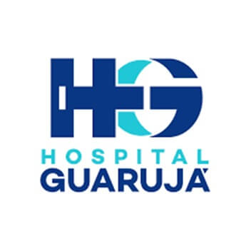
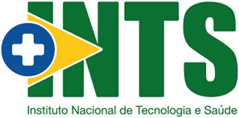
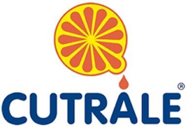
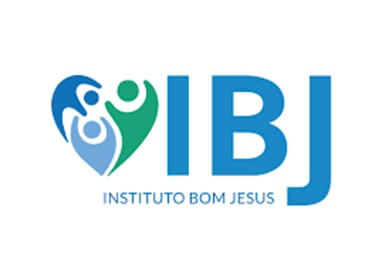
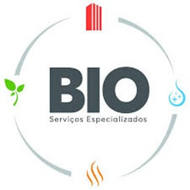
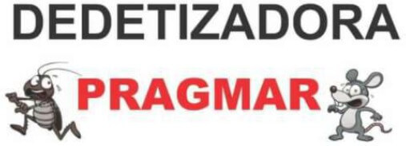
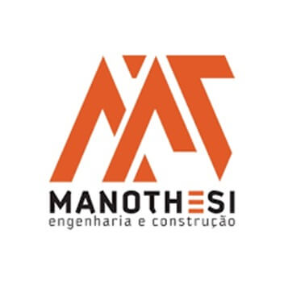
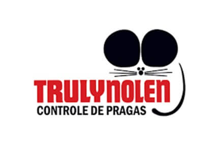
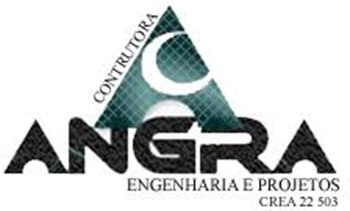
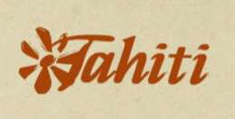

Sua empresa
segura,
seus times
protegidos
Na Setrax, medicina do trabalho, engenharia de segurança e consultoria técnica funcionam de forma integrada — com equipe própria, sem terceirização, garantindo conformidade legal e custos competitivos para a sua operação.

A Setrax não entrega só documentos, entrega diagnóstico, plano de ação e acompanhamento contínuo. Mais do que uma obrigação legal, a Saúde e Segurança do Trabalho representa um investimento inteligente. Ao promover ambientes de trabalho seguros e saudáveis, as empresas reduzem custos operacionais, evitam prejuízos relacionados a acidentes e afastamentos, fortalecem sua segurança jurídica e alcançam melhores índices de produtividade.
Soluções completas
em SST para sua empresa
A Setrax atua de forma integrada unindo Medicina do Trabalho, Engenharia e Consultoria Técnica — cobertura total para garantir a conformidade da sua empresa.

- Exames Ocupacionais: Admissional, Demissional, Periódico, Retorno ao Trabalho e Mudança de Função
- Avaliação Psicossocial — Gestão de Riscos Psicossociais (NR 01)
- PCMSO · PCA · PPR

- PGR — Programa de Gerenciamento de Riscos
- LTCAT · LTIP (Insalubridade e Periculosidade)
- Ergonomia: AET · AEP
- PPP — Perfil Profissiográfico Previdenciário

- Treinamentos completos em Saúde e Segurança do Trabalho
- eSocial — Gestão e envio das obrigações de SST para o sistema federal
O primeiro passo
para uma contratação segura
Contrate com
segurança e
conformidade total
O exame admissional é obrigatório antes do primeiro dia de trabalho e protege sua empresa de passivos trabalhistas. Na Setrax, é realizado por equipe própria — sem terceirização — com emissão do ASO e transmissão direta ao e-Social.
Agendar Exame por E-mailEste canal é exclusivo para agendamento de exames.
Para orçamentos, utilize o formulário de contato.
Exame realizado conforme exigências da Norma Regulamentadora 7 do MTE.
Elimina passivos trabalhistas e previdenciários decorrentes de doenças pré-existentes.
Atendimento rápido para não atrasar o início das atividades do novo colaborador.
Transmissão automática do ASO ao e-Social, sem ação manual da sua equipe de RH.
O que nos faz
diferentes

Por trabalhar com equipe própria, a Setrax entrega o que clínicas terceirizadas simplesmente não conseguem: preço mais baixo, resposta mais rápida e responsabilidade direta em cada documento emitido.
Sem intermediários, sem margem de repasse. A Setrax executa tudo internamente — médicos, engenheiros e consultores sob o mesmo teto — e transfere essa economia diretamente para o seu contrato.
Equipe própria significa agenda própria. Sem depender de terceiros, seus colaboradores são atendidos com prioridade — exame admissional marcado hoje, realizado hoje.
Quando quem executa é quem assina, há controle total. Todos os exames, laudos e programas seguem o mesmo padrão técnico — sem variação entre prestadores e sem surpresas na auditoria.
Medicina do trabalho, engenharia de segurança e eSocial em um único fornecedor. Um interlocutor, uma fatura, zero dispersão de responsabilidade — e uma equipe que conhece os riscos específicos do seu negócio, não apenas emite laudos quando acionada.
Conformidade garantida
por estrutura especializada
A Setrax conta com direção médica especializada e equipe técnica própria para garantir qualidade, conformidade legal e rastreabilidade em todos os serviços — do exame admissional ao PPP e eSocial.
Médico especialista em Medicina do Trabalho, responsável técnico da Setrax desde sua fundação em 2013. Todos os exames, programas e laudos emitidos pela clínica estão sob sua responsabilidade técnica direta.
Alguns de Nossos Clientes










Você administra
vários condomínios?
Temos um plano para isso.
Reúna todos os seus condomínios em um único contrato de SST. PCMSO, PGR, exames de porteiros e zeladores, laudos e eSocial — com preço por volume e relatório individualizado por edifício.
Ver Plano para AdministradorasSem gestão fragmentada por condomínio. Uma fatura, um interlocutor.
Quanto mais condomínios, maior o desconto no contrato consolidado.
Acompanhe a situação de conformidade de cada condomínio separadamente.
Exames, laudos e eSocial sempre em dia. Sem risco de autuação do MTE.
Perguntas frequentes
Por que acompanhar as atualizações da NR-1 é essencial para a sua empresa?
O que é exame admissional e quando é obrigatório?
O que é PCMSO e quais empresas são obrigadas a ter?
O que é PGR e qual a diferença para o PPRA?
Como funciona a integração com o eSocial para medicina do trabalho?
A Setrax atende empresas de todos os setores em Guarujá?
A Setrax realiza atendimento remoto para empresas fora de Guarujá?
Como a Setrax avalia os riscos da minha empresa antes de elaborar os programas?
Solicite um
orçamento gratuito
Onde
nos encontrar
Atendemos em Guarujá e região. Retornamos em até 24h.